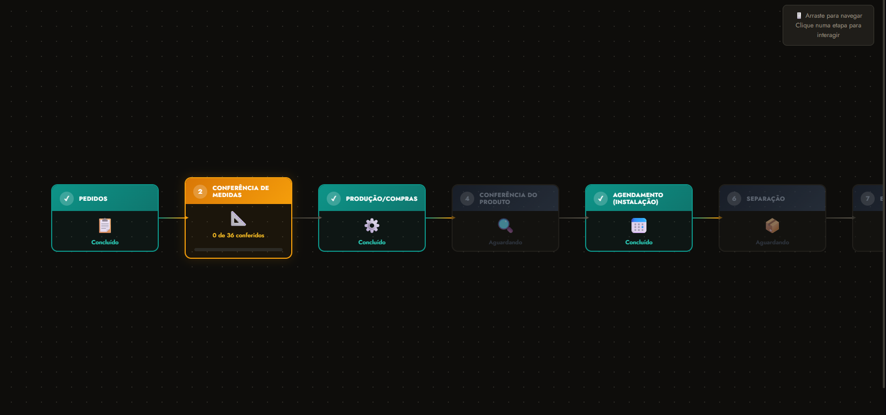
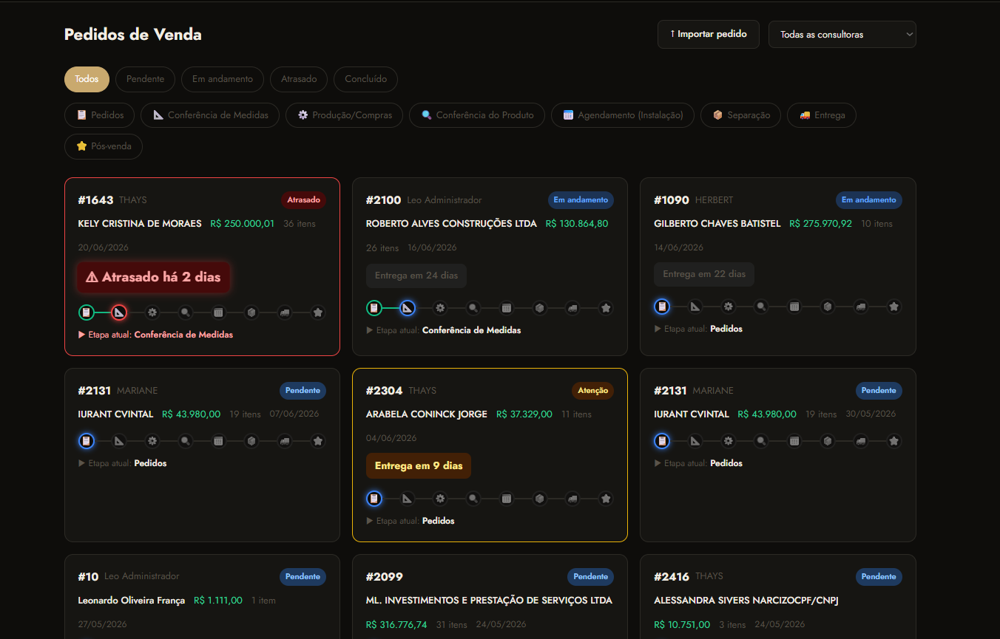
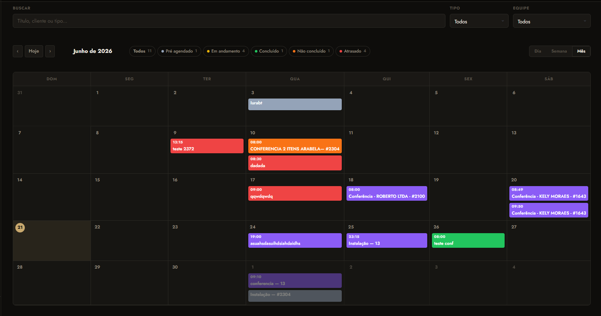
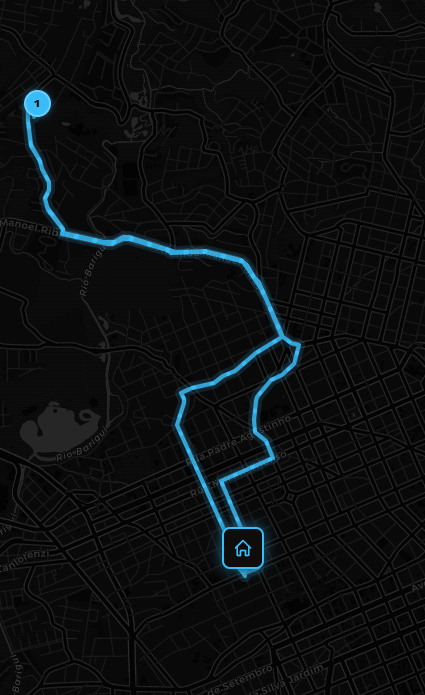

Um passo a passo de cada módulo — pedidos, conferência, produção, agendamento e o aplicativo do instalador — para usar o sistema com confiança desde o primeiro dia.
Cortina e persiana têm medidas técnicas, modelos de wave, barrados e prazos de produção que se perdem fácil entre a venda e a instalação. Cada módulo existe para fechar uma dessas brechas — é por isso que o sistema é organizado assim.
A consultora mede na venda, a fábrica corta, o técnico instala — cada etapa registrada no sistema, não em caderno ou WhatsApp separado.
Metragem de tecido, entretela, forro e clipes calculados automaticamente, validados antes de qualquer corte.
O instalador abre o aplicativo e já sabe se a ficha técnica foi preenchida e o que vai instalar.
Visão rápida de cada parte. Nas próximas seções vamos abrir os dois principais: o painel administrativo e o aplicativo do instalador.
Importação de PDF, categorização automática de itens e cálculo de pagamentos em um fluxo só.
Conferência, instalação, manutenção e retorno organizados em agenda com mapa de rotas do dia.
Cortinas, persianas, trilhos, motorização e acessórios — com categorias e vínculos automáticos.
Cálculo automático de metragem de tecido, entretela, forro e clipes — direto da planilha real da produção.
Medidas reais aferidas em campo e assinatura digital do técnico antes de liberar a instalação.
PWA leve, funciona em campo: agenda, fotos por item, ficha técnica e modo claro/escuro.
Cada usuário vê só o que precisa: comercial, produção, instalação, financeiro e gestão.
Mesmo sistema atende mais de uma empresa, com dados, usuários e catálogos isolados.
Cada pedido avança por essas 8 etapas. É a tela que você vai abrir com mais frequência — ela mostra sempre onde cada pedido está e o que falta para seguir adiante.

Cliente, itens, categorização e medidas iniciais.
Ficha de confecção e conferência técnica antes da produção.
Confecção acompanhada item a item.
Validação do que saiu da fábrica.
Data de instalação definida com o cliente.
Itens conferidos antes de saírem para a rua.
Instalação em campo, com fotos por item.
Satisfação do cliente e encerramento do ciclo.
É aqui que o escritório acompanha cada pedido. Ao abrir a lista, cada um mostra a etapa atual, o status e o prazo de entrega — sem precisar perguntar para ninguém.


Um aplicativo próprio (PWA), leve, que funciona em campo — com tema claro e escuro, pensado para uso ao ar livre, sob sol ou já no fim do dia.

Mapa de rotas do dia,
gerado automaticamente.
Cortina Wave — Sala 2 · Pedido #1643
Ficha de Conferência Técnica,
com assinatura digital.
Para quem for dar manutenção, ou simplesmente quiser entender como o sistema é construído por dentro.
Cadastra o pedido, define os itens e preenche a Ficha de Confecção antes da produção.
Acompanha a confecção item a item e libera a Conferência do Produto.
Usa o aplicativo em campo: agenda, fotos por item e Ficha de Conferência Técnica com assinatura.
Acompanha o fluxo completo, gerencia permissões, catálogo e financeiro.
Esse guia cobre o caminho principal. Para qualquer detalhe que não ficou claro, é só perguntar.